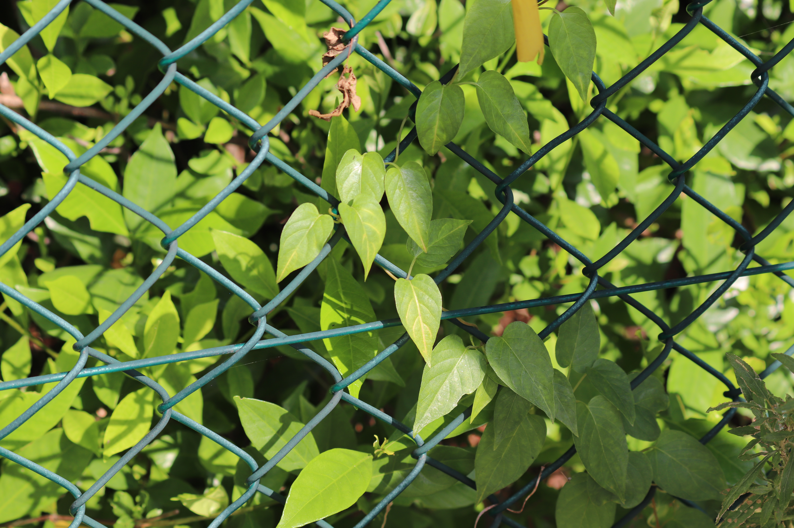

쌍떡잎식물 용담목 꼭두서니과
치자나무(Gardenia Jasminoides)
“치자! 치자! 나무를 치자! (?)”
잎은 마주나거나 3개의 잎이 돌려나는데 긴 타원형 또는 넓은 거꿀피침모양이다. 길이는 3~10cm이다. 가장자리는 밋밋하며 잎자루는 짧다.
꽃은 6~7월에 유백색으로 잎겨드랑이나 가지 끝에서 피며 꽃잎은 6~7개이고 꽃받침은 끝이 6~7개로 갈라진다. 꽃부리는 긴 거꿀달걀꼴로 달콤한 향기가 짙다.
열매는 타원형으로 길이 3. 5 cm 내외이고 보통 세로로 6개의 모서리가 붙어 있다.